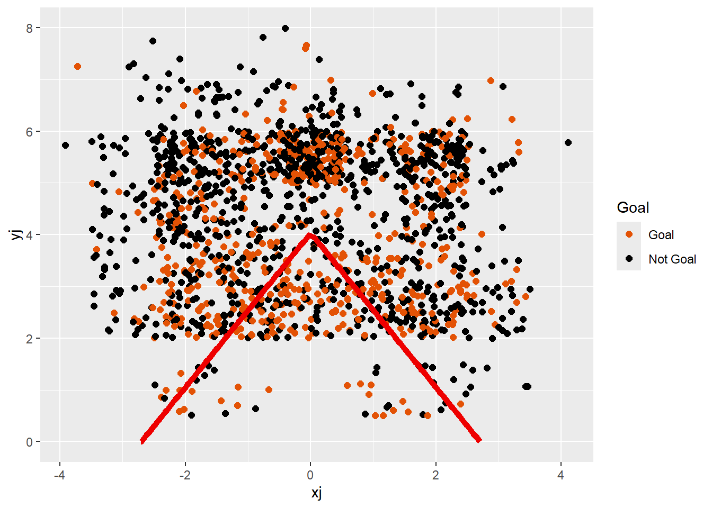

In the last notes, we discussed how to use KNN to classify points. There are several issues with this method, some of which we already discussed
Choosing an optimal K can involve a lot of trial and error
The final model doesn’t really reveal much about how the individual predictors affect the outcome (it’s kind of a “black box”).
It’s hard to incorporate qualitative predictors in meaningful ways.
Unlike regression models, there is no natural way to estimate the probability of belonging to a class, only a hard prediction
Let’s expand on these. To see why 2 is an issue, think back to Module 2. When we fit a multiple regression model, we were able to say which predictors were significant. There is no way to do that with KNN, so while it might be a good predictive model in some scenarios, it doesn’t give us much in the realm of inference. Sure, if we only have two predictors, we can look at a plot of the decision regions, but such plots can be too holey and unpredictable for my taste. For issue 3, KNN relies on being able to calculate the “distance” between points which isn’t so well defined for categories. If two data points have the same value of a category but are 5 units a part in a numeric variable, how should this compare with two data points that have different categories but are only 1 unit apart1? Weird.
For the rest of these notes, we are going to assume that our response variable \(Y\) is binary and denote its values as 0 and 1. We will assume that we are using an arbitrary number of \(p\) predictors, which could be quantitative or qualitative and let \(X\) be the model matrix of predictors with the constant term appended on. In other words, \[
X = \begin{bmatrix} 1 & X_1 & X_2 & \cdots & X_p \end{bmatrix}
\]
Logistic Regression
Logistic regression, which despite the name is a classification method, takes a more inferential and quantitative approach to the problem. Instead of trying to directly classify points as 0s or 1s for new X, it tries to build a model for the probability of being in class 1 (or 0) and then classifies new points as 1 (or 0) if this probability is \(> 0.5\). In other words, we set $p(X) = P(Y=1 | X) $ (the probability of getting a 1 for a given predictor vector \(X\)). Then we would like to fit a model to \(p(X)\) instead of \(Y\) itself. We could try for \[
p(X) = X\beta
\] (i.e. a multiple regression model), but that would lead to values of \(p\) outside [0,1]. \(p\) is supposed to be a probability so that is bad.
Instead, a generalized linear model (GLM) is one which tries to fit a function of \(p\) as a linear model: \[
g(p(X)) = X \beta
\]
for some function \(g\) (called the link function). Different choices of \(g\) lead to different GLMs but the most widely used is the logistic model where \(g\) is taken as the log-odds function \[
g(x) = \log(x/(1-x))
\] Why is this choice so popular? Here’s a thought experiment to explain.
Suppose that we are building a model for water polo shots again and we would like to say something along the following lines: “the chances of making a shot doubles when you move 2 meters closer to the goal”. First of all, using “doubled” implies a multiplicative change, not an additive one, and hence, we need to use log in our model. Second, we use the word “chance” very loosely in these type of statements, but it can really mean one of two things: probability or odds. Let’s say it means the probability \(p\) of making a shot and the chances of making a shot from 4.5 meters out is 0.5. That would mean the chances of making a shot for 2.5 meter out is 1 and the chances of making a shot from 0.5 meters is 2. WTF? You can’t have a probability 2 of making a shot.
However, suppose that we take a different approach and instead interpret the statement as one about odds: \[
odds = \frac{p}{1-p}
\] Note that a probability of 0.5 would correspond to an odds of 1, a probability of 2/3 would correspond to an odds of 2, 3/4 would correspond to an odds of 3, and so on. Now if we double odds going from 4.5 to 2.5 to 0.5 meters, we go from an odds of 1 to an odds of 2 to an odds of 4 which make more sense! So really, if we want to make statements about “doubling chances” as we change predictors, we should work in terms of odds. Hence the “log-odds” model.
Now if you invert the model \[
\log\left(\frac{p(X)}{1-p(X)}\right) = X\beta
\] to solve for \(p(X)\) we get \[
p(X) = \frac{e^{X\beta}}{1 + e^{X\beta}} = \frac{1}{1 + e^{-X\beta}}
\] The function \[
h(x) = 1/(1+e^{-x})
\] is called the logistic function. Hence the model name.
Plotting \(h\) also helps see why the model \[
p(X) = h(X\beta)= \frac{1}{1 + e^{-X\beta}}
\] is a reasonable choice for modeling probabilities as a function of \(X\). Suppose for example we have just single predictor \(X_1\). Then the plot of
\[
p(X_1) = 1/(1+e^{-(\beta_0 + \beta_1 X_1)})
\] would look like this:
library(shiny)
Warning: package 'shiny' was built under R version 4.5.3
library(tidyverse)
Warning: package 'purrr' was built under R version 4.5.3
── Attaching core tidyverse packages ──────────────────────── tidyverse 2.0.0 ──
✔ dplyr 1.1.4 ✔ readr 2.1.5
✔ forcats 1.0.0 ✔ stringr 1.5.1
✔ ggplot2 3.5.2 ✔ tibble 3.3.0
✔ lubridate 1.9.4 ✔ tidyr 1.3.1
✔ purrr 1.2.2
── Conflicts ────────────────────────────────────────── tidyverse_conflicts() ──
✖ dplyr::filter() masks stats::filter()
✖ dplyr::lag() masks stats::lag()
ℹ Use the conflicted package (<http://conflicted.r-lib.org/>) to force all conflicts to become errors
# Slider inputs for beta0 and beta1ui <-fluidPage(sliderInput("beta0", "β₀ (beta0):", min =-5, max =5, value =0, step =0.1),sliderInput("beta1", "β₁ (beta1):", min =-5, max =5, value =1, step =0.1),plotOutput("logisticPlot", width ="400px", height ="200px"))# Server function to calculate logistic function and plotserver <-function(input, output) { output$logisticPlot <-renderPlot({# Define the logistic function logistic_func =function(x, beta0, beta1) {return (1/(1+exp(-(beta0 + beta1 * x)))) }# Generate data for plotting x_vals =seq(-10, 10, by =0.1) y_vals =logistic_func(x_vals, input$beta0, input$beta1)# Plot the logistic functionggplot() +# Logistic curvegeom_line(data =data.frame(x = x_vals, y = y_vals), aes(x = x, y = y)) })}# Run the Shiny appshinyApp(ui = ui, server = server)
You can play around with different values of \(\beta_0, \beta_1\) to get some ideas about what is going on. Try to answer the following based on this application:
How does changing \(\beta_0\) affect the shape?
How does changing \(\beta_1\) affect the shape?
If \(p(x)\) tends to decrease with \(x\), what could we say about the parameters?
What happens if \(\beta_0 = 0\)? What if \(\beta_1 = 0\)?
The sliders below also allow you to see how the logistic graph matches up with the empirical probabality of making a shot as a function of vertical distance form the goal in the shots dataset. See if you can choose \(\beta_0, \beta_1\) to capture the basic shape.
url="https://raw.githubusercontent.com/jmayberr/math133-stat-learning-fall2026/refs/heads/main/Datasets/womenShots.csv"
shots=read.csv(url)
# UI: Sliders for beta0 and beta1
ui <- fluidPage(
sliderInput("beta0", "β₀ (Intercept):", min = -5, max = 5, value = 0, step = 0.1),
sliderInput("beta1", "β₁ (Slope):", min = -5, max = 5, value = 1, step = 0.1),
plotOutput("logisticPlot", width = "400px", height = "200px")
)
# Server: Compute logistic function and binned proportions
server <- function(input, output) {
output$logisticPlot <- renderPlot({
# Define the logistic function
logistic_func = function(x, beta0, beta1) {
(1/(1 + exp(-(beta0 + beta1 * x))))
}
# Generate logistic curve data
x_vals = seq(0, 8, by = 0.1)
y_vals = logistic_func(x_vals, input$beta0, input$beta1)
# Bin the shots based on vertical slices
shots_binned = shots %>%
group_by(y) %>%
summarize(prop_goal = mean(Goal == "Goal"))
# Create the plot
ggplot() +
# Logistic curve
geom_line(data = data.frame(x = x_vals, y = y_vals), aes(x = x, y = y),
color = "red2", size = 1) +
# Bar plot of binned proportions
geom_bar(data = shots_binned, aes(x = y, y = prop_goal),
stat = "identity", fill = "steelblue", color="white",
alpha = 0.6, width = 1) +
labs(title = paste("Logistic Regression: β₀ =", input$beta0, ", β₁ =", input$beta1),
x = "Vertical Distance", y = "Proportion of Goals")
})
}
# Run the Shiny app
shinyApp(ui = ui, server = server)
Alright enough fun. Let’s fit this shit to our data.
Logistic Model on Water Polo Data
To fit a logistic model to shot probabilities on the water polo data, we use the glm function in R with the family = “binomial” option. The response variable needs to be one-hot encoded a 0/1 or F/T first.
Call:
glm(formula = Goal_1 ~ xj + yj, family = "binomial", data = shots)
Coefficients:
Estimate Std. Error z value Pr(>|z|)
(Intercept) 0.337554 0.156129 2.162 0.0306 *
xj 0.007154 0.031643 0.226 0.8211
yj -0.206886 0.035306 -5.860 4.63e-09 ***
---
Signif. codes: 0 '***' 0.001 '**' 0.01 '*' 0.05 '.' 0.1 ' ' 1
(Dispersion parameter for binomial family taken to be 1)
Null deviance: 2116.2 on 1606 degrees of freedom
Residual deviance: 2081.0 on 1604 degrees of freedom
AIC: 2087
Number of Fisher Scoring iterations: 4
Don’t freak out! Let’s talk about this output. The three values in the “Estimate” column are the coefficients \(\hat{\beta}_0, \hat{\beta}_1, \hat{\beta}_2\) in the model \[
p(X) = h(\beta_0 +\beta_1 X_1 + \beta_2 X_2)
\] with \(X_1=xj\) and \(X_2=yj\). If we want to predict the probability of making a shot from position (2,4), we would plug in \(X_1= 2\) and \(X_2=4\) into the right hand side of this equation:
Now, in terms of interpreting the coefficients, remember that the model is linear in log-odds: \[
\log(p(X)/(1-p(X))) = \beta_0 + \beta_1X_1 + \beta_2 X_2
\]
In a simple linear equation, a change of \(\Delta x\) to \(x\) means that the outcome variable changes by \(m\Delta x\) where \(m\) is the slope. Now a change \(\Delta x\) in one of the predictors \(X_i\), while holding the others constant, means that the log-odds of “success” goes up by \(\hat{\beta}_i \Delta x\) so the odds increase by a multiplicative factor \(e^{\hat{\beta}_i \Delta x}\). For example, if we keep our horizontal position constant, but move one meter closer to the goal (change in \(yj\) of \(-1\)), then the odds get multiplied by
exp(coef(goal_glm)[3]*(-1))
yj
1.229843
As a percent change (subtract the above from 1 and multiply by 100), the odds increase by about 22%. Here are the odds changes as a function of the \(\Delta yj\):
plot(-5:5,(exp(coef(goal_glm)[3]*(-5:5))-1)*100,xlab="Change in yj",ylab="% change in odds")
Note that odds changes are negative if you move further away.
One more comment before we wrap this up. The last column of the summary table again gives the p-values for tests of nonzero coefficients:
summary(goal_glm)
Call:
glm(formula = Goal_1 ~ xj + yj, family = "binomial", data = shots)
Coefficients:
Estimate Std. Error z value Pr(>|z|)
(Intercept) 0.337554 0.156129 2.162 0.0306 *
xj 0.007154 0.031643 0.226 0.8211
yj -0.206886 0.035306 -5.860 4.63e-09 ***
---
Signif. codes: 0 '***' 0.001 '**' 0.01 '*' 0.05 '.' 0.1 ' ' 1
(Dispersion parameter for binomial family taken to be 1)
Null deviance: 2116.2 on 1606 degrees of freedom
Residual deviance: 2081.0 on 1604 degrees of freedom
AIC: 2087
Number of Fisher Scoring iterations: 4
In our example, the intercept and \(y\) distance were significant, but the \(x\) distance was not. That is probably because \(x\) is not distance, but rather horizontal position. Instead, we should fit the model with \(|xj|\):
Call:
glm(formula = Goal_1 ~ abs(xj) + yj, family = "binomial", data = shots)
Coefficients:
Estimate Std. Error z value Pr(>|z|)
(Intercept) 0.97473 0.19288 5.054 4.34e-07 ***
abs(xj) -0.36053 0.06217 -5.800 6.65e-09 ***
yj -0.24183 0.03629 -6.664 2.66e-11 ***
---
Signif. codes: 0 '***' 0.001 '**' 0.01 '*' 0.05 '.' 0.1 ' ' 1
(Dispersion parameter for binomial family taken to be 1)
Null deviance: 2116.2 on 1606 degrees of freedom
Residual deviance: 2046.3 on 1604 degrees of freedom
AIC: 2052.3
Number of Fisher Scoring iterations: 4
That seems better!
Logistic Regression, Decision Boundaries, and Prediction
After we have computed a logistic regression model, we can also use it to visualize the decision regions \(G\) and \(\bar{G}\). \(G\) will be the region of \((x,y)\) values where
\[
P(Goal|(x,y)) > 0.5
\] The “triangular” boundary for this region2 is shown with the shot data in the plot below:
library(tidyverse)x_range =seq(min(shots$xj), max(shots$xj), length.out =100)y_range =seq(0, max(shots$yj), length.out =100)grid =expand.grid(xj = x_range, yj = y_range)# Predict probabilities using the logistic regression modelgrid$prob =predict(goal_glm, newdata = grid, type ="response")# Convert probability into a classification (1 if prob > 0.5, else 0)grid$prediction =ifelse(grid$prob >0.5, 1, 0)# Plot the decision boundary with the actual datashots |>ggplot(aes(x = xj, y = yj, color = Goal)) +geom_point(size =2) +geom_contour(data = grid, aes(z = prob), breaks =0.5, color ="red2",linewidth=2) +# Decision boundarylabs(color ="Goal") +scale_color_manual(values=c("#e35205","black"))

We could also visualize this as in the last notes with a color grid
For those of you who did the last group work, this should be close to the best knn model error rates you got.
What else we need to say
To summarize these notes,
The logistic model fits a linear function \(\beta X\) to the log-odds of getting a 1.
The exponentiated coefficients tell us changes in the log-odds of success when the corresponding variable is changed.
A logistic model can reveal some important information about the relationships between our predictors and the outcome.
But there is one kind of strange issue here which is the use of 0.5 as a cutoff for class predictions. Since the classes Goal and Not Goal are imbalanced with roughly twice as many of the latter, could we actually do better by using a different cutoff? Furthermore, we haven’t look at the types of misclassifications. If we actually create a two-way table of predictions vs reality for our Goals:
table(test_set$prediction,test_set$Goal)
Goal Not Goal
Goal 30 32
Not Goal 129 291
we see that there are two types of errors: predicting goal for not goal and predicting not goal for goal.The second type of error is happening much more frequently. Is this desirable? Next notes we’ll talk about these two way confusion matrices in more detail and some other metrics one can use to talk about to assess the value of a classification scheme. We’ll also discuss incorporating qualitative predictors into our models and how we compare our logistic model with the “null”. Until then, love the ones you’re with.
Practice
The framingham.csv dataset contains information from a study in Framingham, MA on cardiovascular heart disease. You can view more information about the data here Download this data and remove all subjects with missing data using the drop_na() command.
Fit a logistic regression model to the variable TenYearCHD based on all the other predictors in the dataset If you hold all other variables fixed, what is the percent change in odds for a Male vs Female getting heart disease? Suppose that a smoker decides to smoke one less pack per day ( about 20 less cigs per day), holding all other variables constant. What will be the percent changes in their odds of getting heart disease?
Footnotes
Ok, there is a method of computing distances in the presence of mixed quantitative/qualitative predictors called Gower Distance - I’ll leave it to you to go down that rabbit hole if you want to take the red pill.↩︎
Usually the boundary is linear but using absolute value turned it into a triangle↩︎